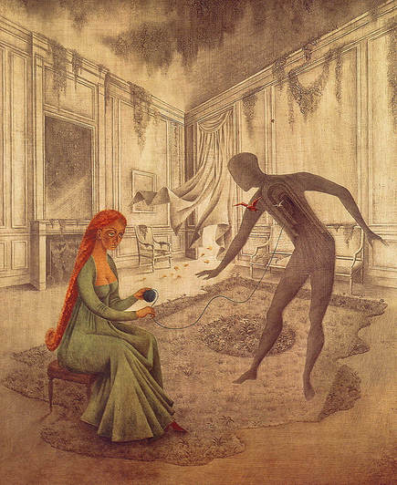
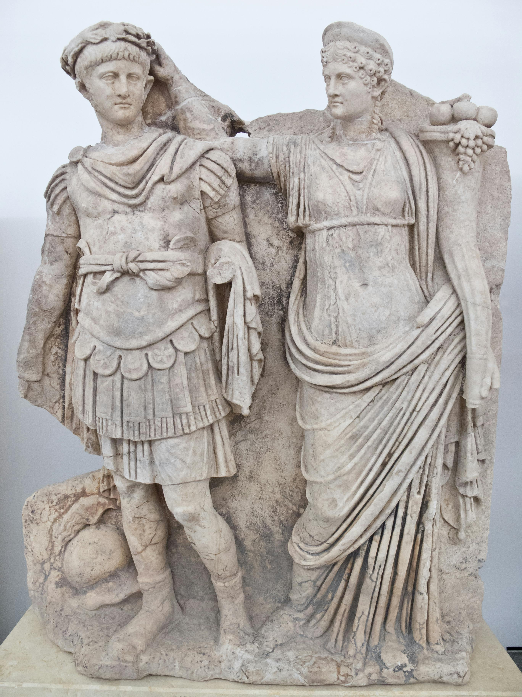
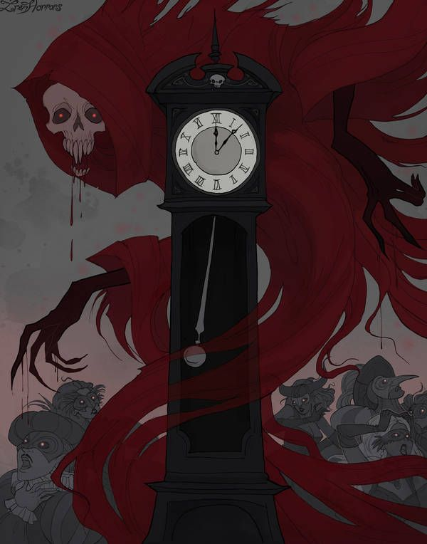
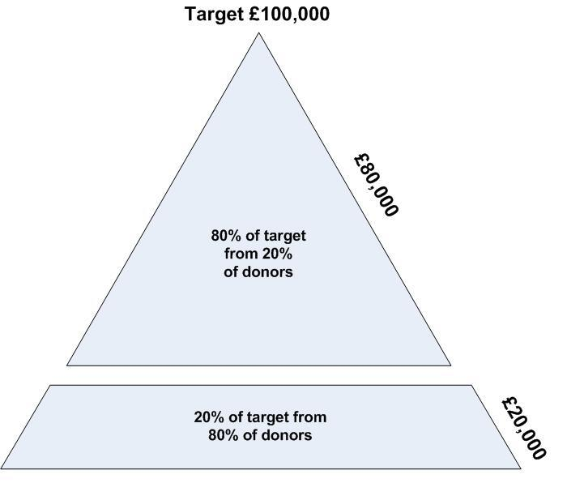
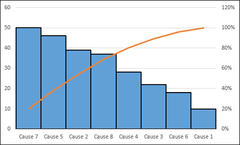
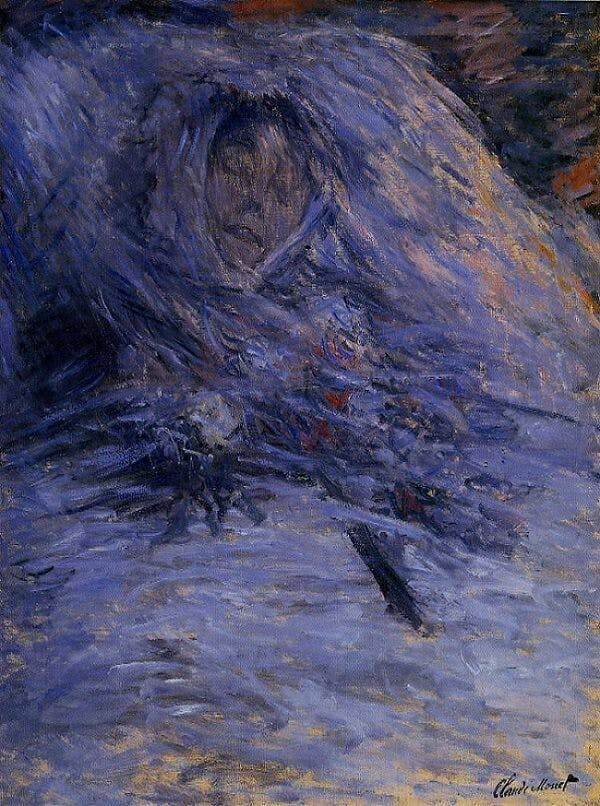

Duty and Death
“To compose our character is our duty, not to compose books, and to win, not battles and provinces, but order and tranquility in our conduct. Our great and glorious masterpiece is to live appropriately. All other things, ruling, hoarding, building, are only little appendages and props, at most.”
~ Michel de Montaigne
Culture is made up of both processes and priority. Culture emerges not based on the priority or values that you espouse, but from how you actually perform and behave. Allocate your resources in a way that is consistent with your processes and priority. It has been discovered that we bias ourselves towards resources over the processes.
Cosmopolitanism is the idea of being a citizen of the world. Sympatheia, rooted in Zeno of Citium’s philosophy, expands on this by affirming that all beings belong to a single, shared community—a reminder to reflect on our interconnectedness and common citizenship within the cosmos. Gaius Musonius Rufus wrote that it is not proper for one to die who is helpful to many while he is alive, unless by dying he is helpful to more. What injures the hive injures the bee. Be a platform that invites others. Collaborate without ego. Loss and death lead to an appreciation for the frailty of the human condition.
Remind yourself of the impermanence of things.
Memento homo, memento mori: Remember you are just a man, remember that you must die. We are all ephemeral placeholders. How rare a day, how short the stay. It is called the present because it is a gift. Take the shortest route, the one that nature planned—to speak and act in the healthiest way. Do that, and be free of pain and stress, free of all calculation and pretension. See the path, walk the path. If you love an earthen vessel, say it is an earthen vessel which you love; for when it has been broken, you will not be disturbed. Regret is about things we can no longer change, and the right attitude is to learn from our experiences, not dwell on decisions that we are not in a position to alter. The Axiom of Futility teaches that efforts to undo the past are pointless; wisdom lies in directing attention toward what we can influence now.

Remedios Varo, Dead Leaves, 1956. Oil on canvas.
Speak little and well. Consult ‘The Courtier’ by Baldesar Castiglione for more on the matter: Let silence be your goal for the most part; say only what is necessary, and be brief about it. On the rare occasions when you are called upon to speak, then speak, but never about banalities like gladiators, horses, sports, food and drink—common-place stuff. Above all don’t gossip about people, praising, blaming or comparing them. Never share your problems with anyone because most of them are glad you have those problems, and the rest don’t care about them. Do not give way to showmanship. Don’t speak too much about yourself. Just because you enjoy recounting your exploits doesn’t mean that others derive the same pleasure from hearing about them. This is an example of your pernicious ego pervading your operating thoughts. Don’t overshare. Privacy is power. A reality centered upon yourself fails to be perspective. It is unflattering when someone is so engrossed in seeing things only from their own perspective. It’s like they’re living in a bubble. Just wait until that bubble pops. There’s nothing more disheartening than a person who refuses to grow, turn a new leaf, or take a leap of faith into the unknown.
He who fears death will never do anything worthy of a living man. The man who fears losing has already lost. He who possesses most must be most afraid of loss. There’s no point in living if you cannot feel alive. Courage is being scared to death but getting up and after it anyway. Courage is doing what you’re afraid to do and there can be no courage unless you’re scared. Only when we are no longer afraid do we begin to live. He who will do anything to avoid failure will almost certainly do something worthy of a failure. You can fail, yet not become a failure, for failure is relative. The only real failure is abandoning your principles. It’s easier to hold your principles 100% of the time than it is to hold them 98% of the time. Don’t succumb to marginal costs over full costs. You will have decision fatigue for holding your principles 98% of the time as opposed to 100% of the time. Decide what you stand for and stand for that all of the time.
Failure is the condiment that gives success its flavor. Go on failing, but next time, try to fail better. Most success in life is from simply showing up. Everyone knows how to celebrate success, but not failure. Nobody plans to fail, but plenty of people fail to plan. View in the perspectives of diligence and disinclination. Discipline is without the feeling of motivation. It is doing because it must be done. Motivation relies on a particular mental state or emotion in order to accomplish a task. However, that reliance is a slavish excuse for accomplishing tasks. Whoever wants to be a judge of human nature should study people’s excuses. This may be good and well for children who feel like doing what they want. In contrast, adults do what they ought to regardless of how they feel. Adults are disciplined. Restructure feelings so that they are inconsequential to tasks. In the same vein, diligence is a constant and earnest effort to accomplish what is undertaken, a persistent exertion of body or mind.
Motivation is a myth and one should that be reserved only for children. Trying to get to feel like doing something that must be done regardless is an unnecessary ingredient. From a psychological perspective, motivation belongs to the subcortical circuits of the child’s brain—primitive, affect-driven, and fleeting. As we mature, these circuits must be pruned and replaced by higher ones: the learned, deliberate discipline of the cortex. Children act from desire; adults act from duty.
Musonius Rufus saw this clearly. He wrote that it is far better to discipline one’s desires than to chase their objects. It is better to train oneself to want little than to suffer endlessly wanting more. Instead of striving for money, power, or praise, he taught, one should labor to master the longing for them. True effort lies not in pursuing pleasures, but in governing the passions that enslave us.
And yet would anyone admit how much better it is, instead of exerting oneself to win someone else’s wife, to exert oneself to discipline one’s desires instead of enduring hardships for the sake of money, to train oneself to want little; instead of giving oneself trouble about getting notoriety, to give oneself trouble how not to thirst for notoriety; instead of trying to find a way to injure an envied person, to inquire how not to envy anyone; and instead of slaving, as sycophants do, to win false friends, to undergo suffering in order to possess true friends?
Tranquility is knowing your own path and staying upon it while being unmoved by the many others that cross it. Leisure is part of that balance, yet true rest is found not in idleness but in purposeful activity. He who seeks rest finds boredom; he who seeks worthy work finds rest within it. The satisfaction we draw from life depends less on circumstance than on our own ingenuity, self-sufficiency, and resourcefulness. Those who wait for life to deliver meaning usually receive monotony instead. It is only the idle who find nothing to do. The secret to happiness lies not merely in being useful, but in continually elevating the uses to which we put ourselves. In the joy of others, you discover your own. For we make a living by what we get, but we make a life by what we give.
The ruin of both ruler and citizen is the same: wantonness, a departure from temperance. Both power and ordinary life collapse through unchecked appetite, arrogance, or indulgence. In other words, when desire and impulse rule instead of discipline and reason. Great wisdom is generous; small wisdom quarrels. Great speech inspires; small speech complains. Not all readers become leaders, but every true leader is a reader. To lead is to ignite something greater in others, to inspire them to dream more, learn more, do more, and become more.
Take measures to groan at others’ crushing opinions, while sympathizing in words outwardly, but never take care to groan inwardly to their crushing opinion: beguile. Empathy is important, but you can understand their feeling without feeling it along with them. You’re an actor in a play, that’s just the way the producer wants it to be. Err on the side of conformity to the norms of society for they supersede your own self. Life typically flows easier in this fashion. Do not be so clement as to tolerate injustice yet do not be so reactionary to overrule reasonable norms. Don’t be corrupted by informational and normative social influences. Remain firm only in the Stoic philosophical convictions. Other firm convictions may be mistaken. A contrarian reasons independently from the ground up and resists pressure to conform.
Choose your company well.
Befriend those who make an interest in following virtue and cultivating character. Everyone ought to strive to be a philosopher in this sense of the term. Apply reason to improve your own community’s life and well-being. Examine those around you. Have they partners with which they revel with? Do you have company performing in the same manner? It is the tranquil and powerful person who maintains steady independency amongst all others. It is easy in the world to live after the world’s opinion. It is easy and solitude to live after our own. The great man is he who in the midst of the crowd keeps with perfect sweetness the independence of solitude.
* * *
When Nero was crowned emperor, it was his mother, Agrippina, who placed the laurel wreath upon his head. An image meant to symbolize Rome’s continuity, yet it would soon come to embody its moral decay. Nero became the very picture of the anti-Stoic ruler: ruled by impulse, enslaved to vanity, mistaking indulgence for freedom and cruelty for strength.
In contrast stands Publius Clodius Thrasea Paetus, the Stoic senator who defied Nero’s tyranny through quiet integrity. When condemned to death, Thrasea echoed the calm defiance of Socrates: “Nero can kill me, but he cannot harm me.” He then opened his veins and met death as one might greet the inevitable. True power is not the ability to conquer others but to remain unconquered oneself. To be able to say to any man, “You may defeat me, but you cannot diminish me,” that is mastery of the highest order.

Agrippina Crowning Nero Emperor, Roman marble relief, 1st century AD.
Govern yourself as though you were preparing the way for a successor who must never become your tyrant. Power is most dangerous when it begins to resemble you. He does not truly die who leaves behind a living likeness of himself—but beware what likeness you create. A ruler who cultivates vanity and vice in others ensures that his own corruption will outlive him.
You become what you give your attention to. As the body is shaped by what it consumes, so the mind is shaped by what it beholds. If you lie down with flatterers, you rise infected with deceit. Be wary of the company you keep; the unscrupulous will poison your reason as surely as Nero’s court poisoned his soul.
You are dyed by the color of your thoughts. Let them not darken through indulgence or pride. Better the solitude of self-examination than the crowded applause of sycophants. For the man who can dwell alone with himself and remain content is freer than any emperor seated on a throne of fear.
Unknown Roman artist, Nero and Seneca, 1st century AD. Marble relief.
Nero’s expression, distant and disinterested, contrasts sharply with Seneca’s calm restraint. The marble captures more than a lesson between teacher and pupil. It is the silent moment when wisdom meets the vanity of power, when understanding becomes futile before ego. Nero lacked the courage to own his cruelty yet demanded praise for preserving order. It was cowardice disguised as prudence, insecurity masked as skepticism.
Our strongest convictions are the ones we should question most, for they mark the perimeter of our limitations. Life remains a narrow thing unless stirred by the will to surpass itself. Guard yourself against the comfortable hypocrisy that corrodes integrity from within. Every person is allotted a small hypocrisy budget—never exceed it. Rebuke those who do. Do not preach what you cannot practice. The engineer should stand beneath the bridge as the first weight crosses; responsibility is the final measure of honesty.
Nero never stood beneath his bridge. He built his palaces and let others burn for their construction. In this way, he resembles Prince Prospero in The Masque of the Red Death—sealing himself inside a fortress of indulgence, convinced that walls, wealth, and distraction could outwit decay. Within Prospero’s abbey, revelry replaced reflection; laughter smothered fear. But as Poe knew, and as Rome would learn, death is not deterred by distance or denied by pleasure. It enters uninvited, silent as a shadow, impartial as truth.
The Red Death moved through the masquerade as Nero’s own corruption moved through Rome—first ignored, then whispered about, then unstoppable. The masque and the empire share the same delusion: that luxury can insulate the soul from consequence. Yet no wall, no title, no melody can drown the ticking of mortality. Death does not discriminate, and it cannot be escaped.

Iren Horrors, The Masque of the Red Death, c. 2020. Digital illustration inspired by Edgar Allan Poe’s short story The Masque of the Red Death (1842).
Nero’s Rome burned while he performed, and Prince Prospero danced as the Red Death crept through his gilded halls. Both believed themselves protected by status and spectacle. Each sought to purchase immunity with pleasure, to silence mortality with noise. But decay seeps through the marble of palaces and the mirrors of ballrooms alike. We are without fault by following a similar fate. We too, have built our fortresses. Not of stone or gold, but of comfort, convenience, and consumption. The modern world perfects what Nero and Prospero only began: consumerism as the refinement of slavery. It chains not the body, but the will. Our abundance has become our dependence. We no longer fear death because we no longer truly live; we only acquire, scrolling endlessly through the digital masquerade, mistaking motion for meaning and distraction for freedom. The Roman empire has not fallen in a metaphorical sense; it has only changed its capital. Rome’s excess now speaks English and spends dollars and where power hides beneath prosperity and indulgence passes for freedom.
Death in Tehran
A rich and mighty Persian once walked in his garden with one of his servants. The servant cried that he had just encountered Death, who had threatened him. He begged his master to give him the fastest horse so that he could make haste and flee to Tehran, which he could reach that same evening. The master consented and the servant galloped off on the horse. On returning to the house the master himself met Death, and questioned him, “Why did you terrify and threaten my servant?” “I did not threaten him; I only showed surprise in still finding him here when I planned to meet him tonight in Tehran,” said Death.
Aside from death, imagine your property being stolen as another example of loss. Well, it was never your property. We are neither ‘owners’ nor ‘entitled’ to anything actually—so don’t get attached. Specialness fuels entitlement whereas sacrifice keeps entitlement at bay. You’re only ever entitled to the hard work, not the fruits of it. Entitlement is empty wisdom without experience. Entitled individuals maintain expectations and beliefs of status that are delusional. Grandiose and victim narcissists expect special treatment without having done the work. Your role is a human being not a human possessing; do not be mistaken. Take care of these things as they are not your own. What you once possessed is no longer possessed by you; it has been returned. Dependency is slavish and foolish because it deprives you of your acting in accordance with your own autonomy. Actualize the efforts to free yourself from subservience. Compliance to grievances will be your submission. Do not be bothered by the individual donors who make such transactions. After all, remember the benefit of the doubt; you will never know the whole situation.
Make a habit, then, of studying social relationships, for they reveal the invisible machinery that shapes your desires. Avoid vulgarity and idle talk; speak plainly, without pretense or sermonizing. Conduct yourself freely—autoschediastically—guided by virtue, not appetite. Take no more than your share, and do not grasp at every opportunity as if it were owed to you. Fairness is a matter of clear perception, not entitlement. Cultivate confidence in your own discretion of what is good. Resist the temptation of the ordinary, the mass-produced, the pedestrian life. Practice mindful repetition—mantras that anchor the mind against the current. Mantra means “a place to rest the mind,” and prayer, at its best, serves the same purpose. Regularly meditate on adversity—premeditatio malorum—for foreseeing misfortune makes it less fearful. Remember the gifts already given: your reason, your breath, your inner resources. For the truest freedom is not the liberty to consume, but the strength to abstain.
What can I expect from life? → What does life expect of me?
Ask not what your country can do for you; ask what you can do for your country. Tend the part of the garden that lies within your reach. There is so much to mend, and so many who need saving, so let your constant questions be these: What is my duty? To whom am I indebted? What can I repair? How can I serve? If you cannot feed a hundred people, then feed one. If you cannot do everything, do not let that stop you from doing something.
A society built upon achievement rather than character will inevitably decay. Accomplishment is inward. It is the fruit of discipline, purpose, and integrity. Achievement seeks outward recognition and measures worth by applause. When ambition eclipses virtue, narcissism follows, and moral order collapses. Merit must be tempered by civic conscience. Those who have been shaped by a community owe their strength to it; the only proper repayment is service to the greater good. It is better to debate what matters than to silence disagreement with premature certainty. And death, too, should be spoken of plainly—not as a tragedy, but as a return of matter to its source. It is simply appreciating the carbon cycle.
The ego distorts our perception of reality. Whether a disagreement with a spouse or a challenge at work, the ego fills the unknown with prejudice, fantasy, and fear. The larger the ego, the more it blinds us to what truly is. Those imprisoned by conviction cannot see beyond their own beliefs. To see clearly, we must return to what the Taoists called the uncarved block—the state of simplicity before knowledge hardened into judgment. The one who reaches this clarity can observe all forces in a situation without distortion and respond with precision and calm.
This is the essence of wu wei—not passive surrender, but courageous non-interference. It is the bravery to unlearn, to cast aside the frameworks that confine perception, to let truth emerge of its own accord. “Renounce knowledge,” says the sage, “and your problems will end.” What is the difference between yes and no, good and evil, fear and the thing feared? How far we have strayed in our obsession with control. Fear is often more crippling than the danger itself, rage more destructive than the wrong that provokes it, hate more poisonous than the object it despises.
In 1906, Italian economist, Vilfredo Pareto, noticed annually, 20% of pea pods in his garden produced about 80% of peas. The Pareto principle shows that for many events, roughly 80% of the effects come from 20% of the causes. The Pareto assumption makes it simple to focus on the vital few. You cannot overestimate the unimportance of practically everything. Since time is precious, apply this to work, attention, and even rest. Having already invested time in a poor book or film doesn’t justify finishing it. Your time is better spent on experiences that enrich rather than drain you. That extra bit of YouTube late at night isn’t deepening your learning, and staying in bed once you’re already awake doesn’t enhance recovery. According to the Pareto principle, both are examples of diminishing returns—more time yields less value.

Be prepared: When you are 80% done any large project (building, directing, or writing) the rest of the myriad details will take a second 80% to complete due to diminishing returns. This implies that the effort required to complete the remaining 20% could be roughly equivalent to the initial effort expended on the first 80%.
The point I want to make by introducing this principle is that the Pareto Principle illuminates how the few shape the many. In every age, a small fraction of people, institutions, or ideas hold disproportionate influence over the direction of the whole. In Nero’s court, that influential few were flatterers whose appeasement steered an empire toward ruin. In Prince Prospero’s masquerade, it was the revelers who set the tone of denial, dancing while death approached. And in the United States today, the dynamic persists under a different mask: consumerism. A minority manufactures desires, and the majority labors to fulfill them. The same pattern repeats: power and persuasion concentrated in the hands of the few, indulgence accepted by the many. Thus, the Pareto distribution becomes not only an economic law but a moral one, reminding us that the health of a civilization depends on the virtue of its vital few. The idealistic journey can become unrealized. Goals can be transformed. Corrupted systems and structures capitalize on these sorts of changes:
- Duty transforms to pride.
- Honor transforms to power.
- Country transforms to greed.
A purity spiral occurs when the desire to appear virtuous overtakes the pursuit of truth, and conformity replaces conscience. Moving from the idea of the purity spiral, the concept of Howard Hughes syndrome arises as a mechanism that sustains it: as individuals accumulate power, those around them begin to value appeasement over truth, shielding authority from honest correction. This dynamic is hardly new. It was the atmosphere of Nero’s court, where flattery replaced candor, and the emperor’s whims became decrees. It was the mood of Prince Prospero’s masquerade, where comfort and spectacle concealed decay. When fear of displeasure outweighs the duty to speak truth, the rot has already begun. Think about the role of in-group and out-group dynamics in perpetuating purity spirals, showing how shared hatreds can unite people more easily than shared principles. It is always easier to condemn than to think.
Will Durant once observed that a nation is born Stoic and dies Epicurean. Power attracts the ego, corrupts judgment, and rewards vanity while discouraging responsibility. It is a stage forever occupied by liars, opportunists, demagogues, and cowards. History is one long story of men seeking power over others to enjoy life’s pleasures at another’s expense, shifting burdens from their own shoulders to those of their neighbors. Force inevitably draws those of low morality, and tyrants of genius are almost always followed by scoundrels. Power concedes nothing without demand; it never has and never will. The pride of rulers throws mankind into confusion, and the only antidote to that confusion is awareness.

A Pareto chart ranking the frequency of different causes.
The X axis is the amount of work, and the Y axis is the returns. As we can see, hard work has diminishing returns. It is not linear. Causes 7, 5, and 2 account for the majority of the total returns. It is like wringing water out of a towel. You’ll get a lot of water out at first, but there is a gradual decrease in the amount of water you wring out. Work smarter, not harder. There is probably an easier way if you ask ‘who?’ instead of ‘how?’ Who do you know that probably knows how to do this? It’ll save you time having to go down the Google (or now the ChatGPT) rabbit hole of analysis. Again, are you being productive or are you being busy.
How can someone be busy yet accomplish nothing? That is the passion paradox. If insanity is doing the same thing repeatedly while expecting different results, then blind passion is its more seductive cousin like an emotional fixation that dulls judgment and disguises obsession as virtue. Passion often exalts the self; it inflates the I. Purpose, by contrast, deemphasizes the self. It directs energy outward rather than inward. Passion seeks gratification; purpose seeks meaning. Passion consumes; purpose endures.
As wealth or time increases, so too does the spending to accommodate for this increase. This is called Parkinson’s Law where work expands to fill the time allocated for it. Do not waste your increase upon superfluous materials or experiences. Reinvest into the cosmopolis—into the community or a charity—for this is where you will find true value. If you think otherwise, you are mistaken because helping others helps yourself. Don’t escalate the cost of commitment, for you will get diminishing returns like the graph above, and you will fall victim to the sunk cost effect in chasing what you lost. The goal isn’t to live forever. The goal is to create something that will. Something that stands the test of time—something timeless, like character. Be a role model for those around you. Make living life better, not just for yourself, but for those who will follow. Leave the world better than when you entered it.
Sextus, the grandson of Plutarch, advised Marcus Aurelius to be free of passion yet full of love. When you can see beyond yourself, peace of mind awaits. To find yourself, think for yourself. Remain faithful to your purpose, and bear present frustrations in service of longer aims. Passion versus purpose: if you wish to love what you do, abandon the passion mindset “What can the world offer me?” and adopt the craftsman mindset “What can I offer the world?” Who you are, what you think and feel, what you love are all are shaped by what you give your attention to.
Reflect on the tail end which is the time you’ve already spent compared with the time you have left. Live near those you love, for proximity multiplies presence. You likely have ten times more moments left with those who share your city than with those who live far away. Priorities matter. Let them be chosen consciously, not dictated by inertia. Cherish quality time. If you are in the last ten percent of your time with someone you love, let that awareness guide how you spend it. Treat those remaining moments as they truly are—precious, finite, irreplaceable. Arius Didymus’s consolation to Livia on her loss of her son, Drusus:
Do not, I implore, take a perverse pride in appearing the most unhappy of women: and reflect also that there is no great credit and behaving bravely in times of prosperity, when life glides easily with the favoring current: neither does a calm sea and fair wind display the art of the pilot: some foul weather is wanted to prove his courage. Like him, then, do not give way, but rather plant yourself firmly, and endure whatever burden may fall upon you from above; scared though you may have been at the first roar of the tempest. There is nothing that fastens such a reproach on Fortune as resignation.
When crisis and disaster strike, do not waste them. Without problems, there can be no progress. Musonius Rufus taught that praise and applause are wastes of time for both the audience and the philosopher. When a philosopher exhorts, persuades, rebukes, or discusses the nature of virtue, and the audience responds with shouts of admiration, gestures of enthusiasm, or sentimental approval—when they are moved more by the charm of the speaker’s rhythm than by the weight of his reasoning—then both teacher and listener have failed. What unfolds is no longer philosophy but performance, not the pursuit of truth but the playing of a flute.
Fame is fleeting and empty. Applause and cheering are the clacking of tongues and the smacking of hands. Empty cans make the most noise. There is no epiphany necessary to see that people have a desire to sound smart and they have a remarkable ability to take credit when the clock is right twice per day. Therefore silence is the sign of a successful philosopher because it indicates an audience wrestling with difficult ideas.
Rhetoric is the study of persuasion. In the same vein, soothsayers are empty. Let come what may, do not make a foolish enterprise out of foretelling time. Beliefs about the future are so often wrong that they rarely justify the rigidity they impose. The wiser strategy is to remain aggressively open-minded. Rather than forcing yourself toward what you believe is the right direction, admit that you don’t know and stay acutely sensitive to the shifting winds of change. Bet on people before you bet on ideas. The most valuable insight often comes not from predicting the future, but from perceiving the present more clearly than others.
Communicate both correctly and effectively. Craft sound reason to purge the world of the pernicious folk psychology that deludes humankind’s cognition and pervades our cultures. Each accomplishment lands us one step closer towards amity. Cicero records that Panaetius believed it possible for a good lawyer to defend a guilty client—so long as the client was not monstrously wicked or depraved. After all, if no one is willing to defend the undesirable, how can justice ever be certain? Consider Publius Rutilius Rufus, who, when unjustly exiled, asked: “What sin have I committed that you should wish me a more unhappy return than departure? I would rather my country blush for my exile than weep at my return.” His words capture the Stoic’s paradox: to stand for justice even when justice turns against you.
Better to be missed than to overstay your welcome.
It is the oldest tactic of the corrupt to accuse the virtuous of the very crimes they themselves commit. Their hearts lean eagerly toward wickedness, quick to project what festers within. We are all sentenced to death at birth; only the timing varies, and some events merely hasten what was always certain. Junius Rusticus taught Marcus Aurelius to resist the vanity of abstraction: to avoid writing treatises on hollow theories or composing moral sermons for others. Better, he urged, to live philosophy than to lecture on it, to practice simplicity rather than describe it. A generation earlier, another Stoic, Helvidius Priscus, embodied that same conviction. When Emperor Vespasian sent for him and ordered that he not appear in the Senate, Helvidius replied:
- “It is in your power not to allow me to be a member of the Senate; but so long as I am, I must go in.”
- “Well, go in then,” said the emperor, “but say nothing.”
- “Do not ask my opinion,” answered Helvidius, “and I will be silent.”
- “But I must ask your opinion.”
- “And I must say what I think right.”
- “If you do,” said Vespasian, “I shall put you to death.”
- “When,” replied Helvidius, “did I ever tell you I was immortal? You will do your part, and I will do mine. It is your part to kill; it is mine to die—without fear. Yours to banish me; mine to depart without sorrow.”
Such was the Stoic’s strength: the unshakable will to act rightly, even before the throne of power, knowing that while life and office belong to fortune, integrity belongs to oneself. As Shakespeare observes in Macbeth, life’s about a walking shadow, a poor player that struts and frets his hour upon the stage and then it is heard no more. Simply put, the Stoic says you do your job, I’ll do mine. You be evil, I’ll be good. Let everything else come what may. You should sooner seek forgiveness over permission. If you’re on the receiving end, forgive even in the absence of apology because forgiveness is a gift to yourself. If you need to apologize, do it quickly, specifically, and sincerely. Without forgiveness life is governed by an endless cycle of resentment and retaliation.
Epictetus was fond to remind us that thou art a little soul bearing about a corpse. Before you are dead, attend as many funerals as you can bear and listen. Nobody talks about the departed’s achievements. The only thing people will remember is what kind of person you were while you were achieving. We become more wise through conversations with the dead. When you die you take absolutely nothing with you except your reputation. Optimize your generosity. No one on their deathbed has ever regretted giving too much away. Aging is a fact of life, but old is a mindset. You cannot escape the future, but at the very least, you can mold the shape of that future.

Claude Monet, Camille Monet on Her Deathbed, 1879. Oil on canvas.